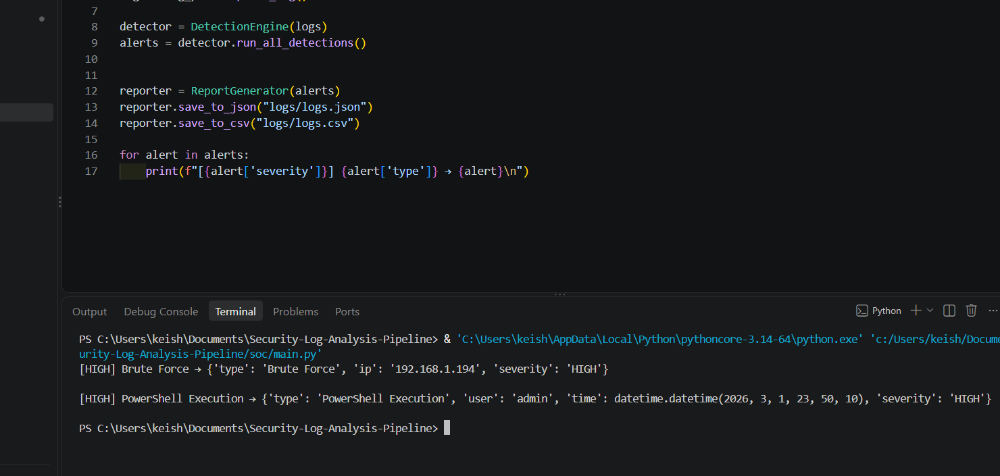

Log generation & parsing
Generate and process sample security log activity for analysis.
A Python-based security monitoring project exploring log processing, suspicious-activity detection and structured reporting.
This Python-based SOC detection tool explores a practical security-monitoring workflow: generating and parsing log data, evaluating activity against detection conditions, and producing reports that make suspicious behaviour easier to review.
The project demonstrates how Python, object-oriented design and timestamp-based analysis can be applied to defensive security tasks.
Generate and process sample security log activity for analysis.
Identify patterns including repeated failed logins, after-hours activity and PowerShell-related events.
Export detection results in JSON and CSV formats for review.
This project is an earlier, more focused detection tool. It provides a practical foundation in log processing and rule-based detection. MiniSOC is a separate, more modular project that builds on these interests through normalized event models, parser abstractions and a more extensible architecture.
Executing the pipeline against simulated authentication and endpoint activity flags threshold-based brute-force attempts, after-hours access, and suspicious PowerShell execution, exporting alerts to both JSON and CSV formats.
